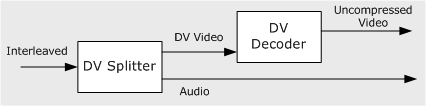
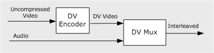

[The feature associated with this page, DirectShow, is a legacy feature. It has been superseded by MediaPlayer, IMFMediaEngine, and Audio/Video Capture in Media Foundation. Those features have been optimized for Windows 10 and Windows 11. Microsoft strongly recommends that new code use MediaPlayer, IMFMediaEngine and Audio/Video Capture in Media Foundation instead of DirectShow, when possible. Microsoft suggests that existing code that uses the legacy APIs be rewritten to use the new APIs if possible.]
Digital video (DV) can be captured from a DV camera, stored in a file on the user's computer, or stored on tape using a video tape recorder (VTR). Thus, the operations that an application might perform on a DV stream include:
DirectShow provides the following DV filters:
The DV Splitter and DV Video Decoder work together. The splitter takes the interleaved stream and outputs separate audio and DV video streams. The decoder converts the DV video to uncompressed video. The following image illustrates this process.

The DV Video Encoder and the DV Muxer reverse the process: The encoder converts uncompressed video to DV video, and the mux combines audio and DV video to create a single interleaved stream, as shown in the following diagram.

Â
Â